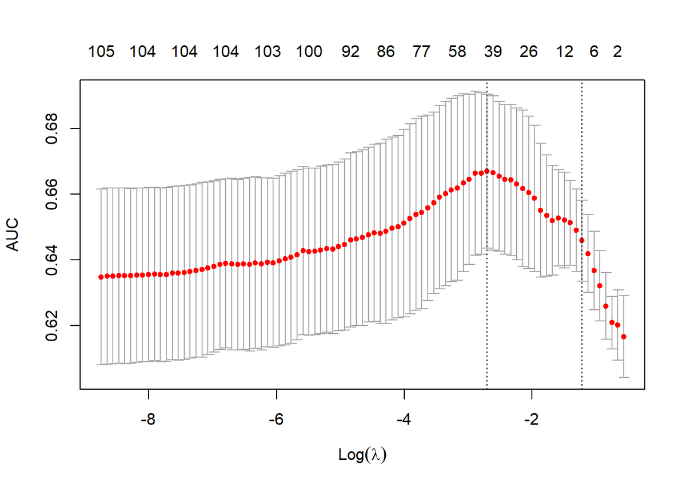
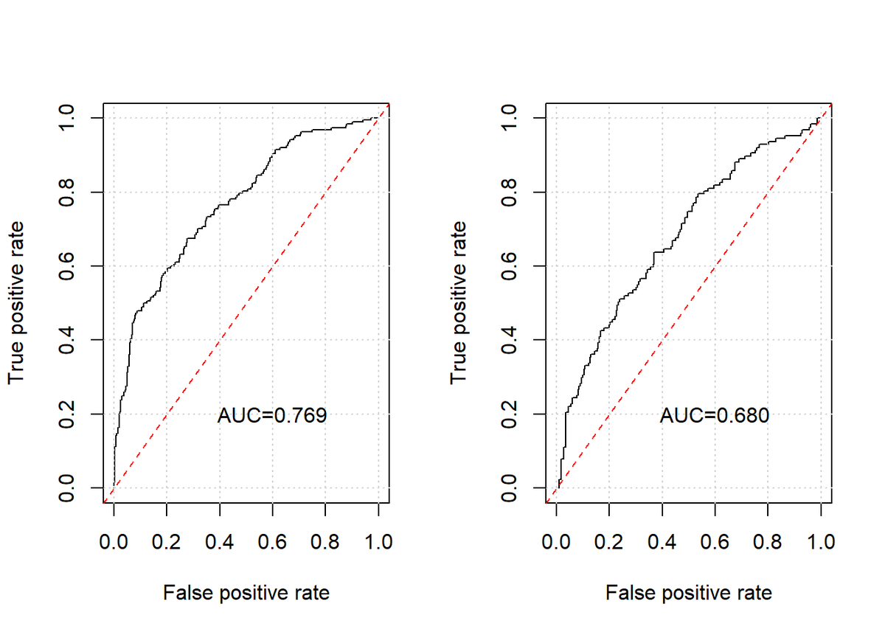
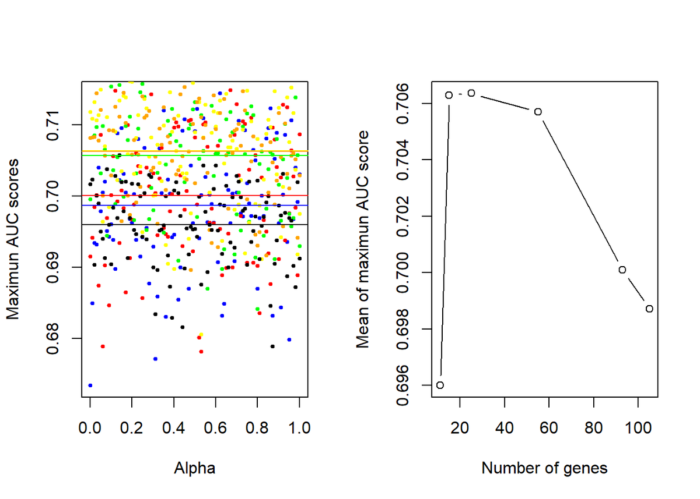
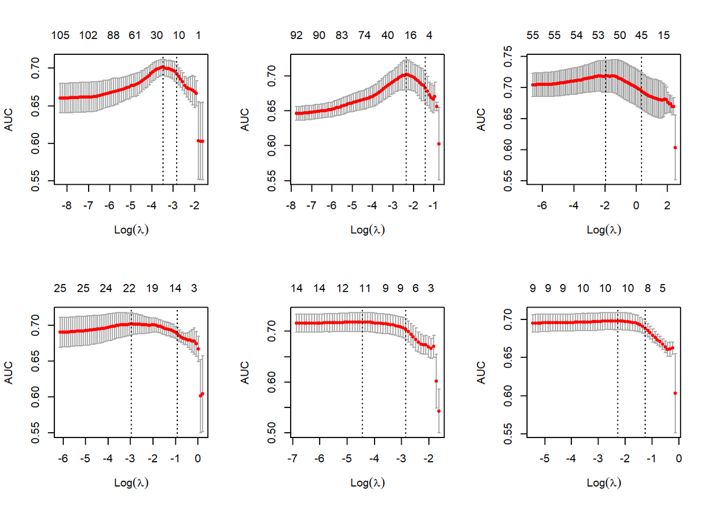
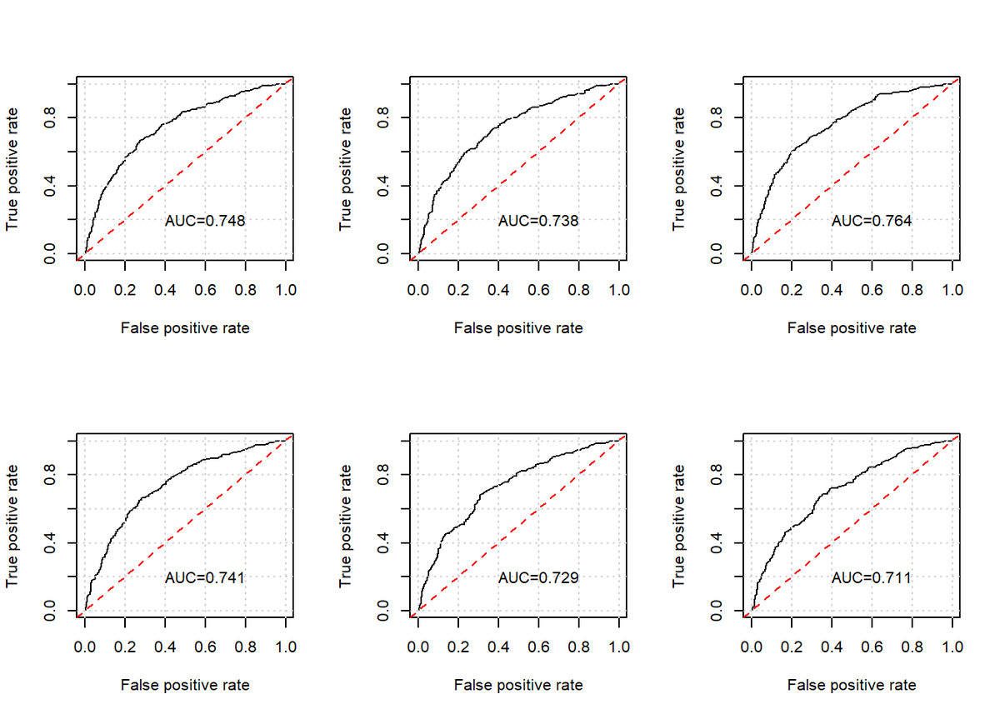
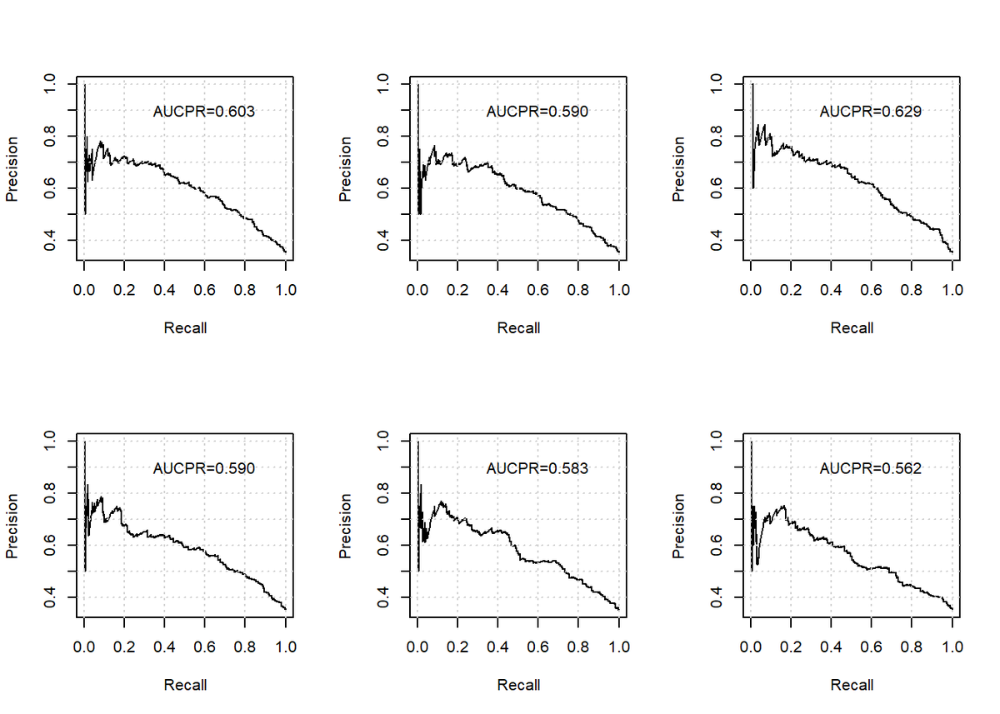
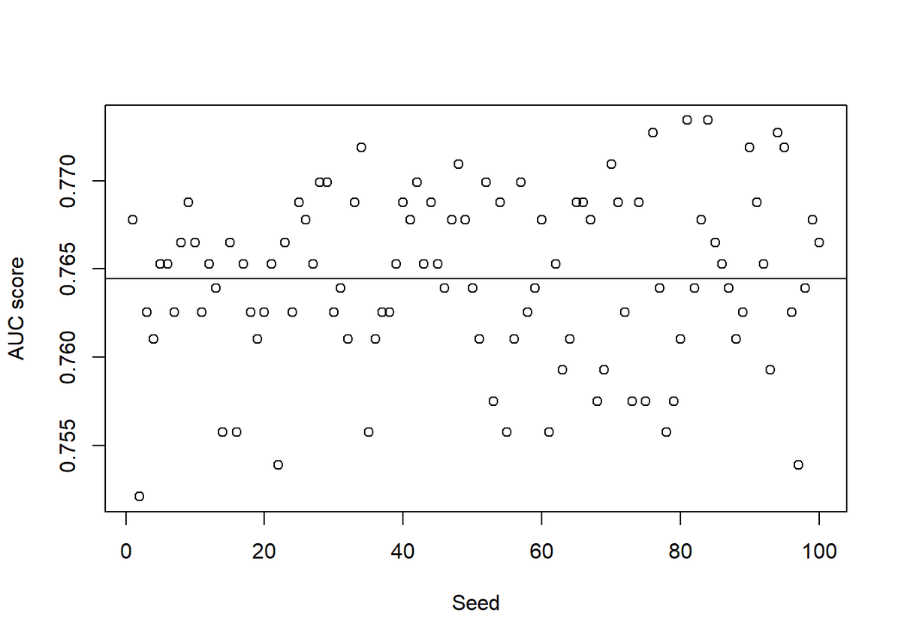
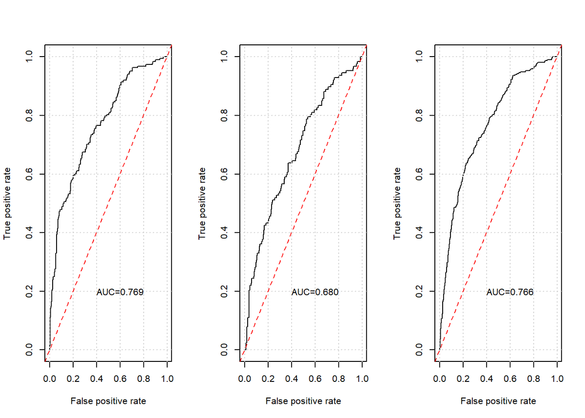

Ikuspegi orokorra
Datu klinikoetatik eta gene-adierazpenetik abiatuta, bularreko minbizia duten zein pazientek biziko diren 96 hilabete (8 urte) baino gehiago jakin al daiteke? Epe luzerako aurreikuspenak zailak dira denborak pisu handia duelako; Genomika eta Proteomikako irakasleak zioenez, proba-multzoan lor zitekeen onena 0,74 inguruko AUC zen. Nik lortutako eredu onenak, random forest-ekin hautatutako 58 geneko elastic net batek, oso gertu iritsi zen.
Kontuz: entrenamendu-datuetan jasotako 0,76 inguruko AUCa baikorregia da; ikusi gabeko datuetako 0,733 da fidatu beharreko zenbakia. Jatorrizko txostenak AUC “zehaztasun” deitzen du, eta ez da gauza bera.
Datuak
Datu-multzoa unibertsitateko ikastaro batetik dator: 985 paziente, bakoitzak 24.374 zutabe (6 aldagai kliniko eta 24.368 gene-adierazpen), eta entrenamendu-multzoan biziraupenaren emaitza. Proba-multzoak formatu bera du, 985 pazienterekin, baina emaitzarik gabe. Fitxategiak hiru taula ditu: Xtrain, ytrain eta Xtest.
Aurrebista
Datu gordinen lehen errenkadak. Datuak igotzen direnean agertuko dira.
Deskargatu
Dena R fitxategi originalean dago. Excel fitxategiek taula berberak dituzte (Xtrain, Xtest eta ytrain); haietan 24.374 zutabeak bi orritan daude banatuta, Excelen zutabe-mugagatik.
Txosten osoa
Unibertsitateko jatorrizko txostena, kodea eta irudi guztiekin. Txostena ingelesez dago. Datu pertsonalak eta fitxategi-bideak kendu dira. Iruzkinak eta ideiak bloke bereizietan gehitu dira.
1. Introduction
The aim of our project is to predict cancer survival in breast cancer patients from clinicogenetic data. We will try to predict whether women can survive more than 96 months (8 years). Theoretically, the best approximation we could get is an AUC score of 0.74 in the Test set 1. The reason for this is that we are making long-term predictions, so the time factor plays a big role and makes it more difficult to predict correctly. If we were making predictions for a shorter period of time, our prediction results would be better.
1.1 Loading the Packages
First, we load and install the packages.
Kodea erakutsi
#install.packages("glmnet")
#install.packages("ROCR")
#install.packages("e1071")
#install.packages("randomForest")
#install.packages("boot")
#install.packages("survival")
#install.packages("MASS")
#install.packages("class")
#install.packages("nnet")
#install.packages("arm")
library(boot);
library(survival);
library(MASS);
library(class);
library(nnet);
library(e1071);
library(randomForest);
library(glmnet);
library(ROCR);
library(matrixStats);
#library(arm)
#library(FSelector)1.2 Loading Data
We load our data, it consists in 3 main groups or objects loaded as matrices.
On the one hand, we have xtrain and ytrain, which are our training set and the ones that we will use to train our predictor. We can use xtrain to train our model and ytrain to see how well it works, since this last one is the known outcome of xtrain. On the other hand, we have Xtest which is part of our Test set 1. We know that it contains the information of ~1000 people and their ~24000 gene expressions. However, we don’t have the outcome of this people so we can’t know how well performs our model with this new data. Nevertheless, we can see the results if we upload our predictor to the course’s evaluation server.
At last, the model performance will be evaluated on Test set 2, where we don’t have patients data neither the outcome of them.
Kodea erakutsi
load("path/to/dataChallenge2020_students.Rdata")2. Predictions splitting the training set
To make the first approach, we will split xtrain and ytrain into two groups. 600 out of ~1000 will be used to train our model and the rest will be used to validate or see how well it performs since we are not using these patients to train our model.
Kodea erakutsi
#We use set.seed to always get the same results
set.seed(1)
index<-sample(nrow(Xtrain))
#In order to run the predictions, we will split the Xtrain into two sets of data: Training and Validation.
XsTraining<-Xtrain[index[1:600],]
YsTraining<-ytrain[index[1:600],]
XsValidation<-Xtrain[index[601:nrow(Xtrain)],]
YsValidation<-ytrain[index[601:nrow(Xtrain)],]2.1 Selection of variables
We will select our variables from 4 different methods:
With standard deviation we will select the first 100 genes that have the highest standard deviation. Then, with Minimum redundancy Maximum relevance (mRMR) we reduce our variables to 96 and obtain the same standard deviation order with the loop (this last step is not necessary).
Using limma, we select the top 5 genes ordered by their p-value. We do not want to rely too much on p-values as it does not take redundancy into account. For this reason, we select only a few.
Using limma robust, we also select the top 5 genes ordered by their p-value for the same reason as before.
Finally, we selected the genes that we know are related to breast cancer survival. According to [1] we know that LYVE1, LILRB5, CD209 and IMPDH2 are genes of interest for our project.
Kodea erakutsi
#Using standard deviation we select the top 100 genes
Sds <- colSds(XsTraining)
KeepVar <- order(Sds, decreasing = T)[1:100]
#Multivariate
library(mRMRe)
set.thread.count(6)## [1] 6Kodea erakutsi
df <- data.frame(y = YsTraining[!is.na(YsTraining[,3]),3], XsTraining[!is.na(YsTraining[,3]),KeepVar])
dd <- mRMR.data(data = df)
salida <- mRMR.classic(data = dd, target_indices = c(1), feature_count = length(KeepVar))
KeepmRMR <- match(colnames(salida@mi_matrix)[salida@filters[[1]]], colnames(Xtrain))
KeepmRMR <- KeepmRMR[!is.na(KeepmRMR)]
print(length(KeepmRMR))## [1] 96Kodea erakutsi
Variables<-0
j<-1
for (i in 1:length(KeepVar)) {
for (k in 1:length(KeepmRMR)) {
if (KeepVar[i]==KeepmRMR[k]) {
Variables[j]<-KeepVar[i]
j<-j+1
}
}
}
#Using limma
XsTraining2 <- XsTraining[!is.na(YsTraining[,3]),]
Design <- cbind(1,YsTraining[!is.na(YsTraining[,3]),3])
library(limma)
fit <- lmFit(t(XsTraining2), Design)
fit2 <- contrasts.fit(fit, c(0,1))
fit2 <- eBayes(fit2)
Keeplimma <- order(fit2$p.value)[1:5]
#Using limma Robust
fit <- lmFit(t(XsTraining2), Design, method = "robust")
fit2 <- contrasts.fit(fit, c(0,1))
fit2 <- eBayes(fit2)
KeeplimmaRobust <- order(fit2$p.value)[1:5]
#Related genes
#CD209 was not in our genes
colnames(XsTraining)[15743] #LYVE1## [1] "LYVE1"Kodea erakutsi
colnames(XsTraining)[22926] #LILRB5## [1] "LILRB5"Kodea erakutsi
colnames(XsTraining)[14830] #IMPDH2## [1] "IMPDH2"To find the column numbers of our genes we did the following. First we tried to use loops but it was very time consuming. To save this time we passed xtrain to Excel. There, using find we were able to locate the gene name and since the column numbers must match, we also obtained the position of our genes in R.
Finally, we introduce the selected variables in a vector and make them unique since we do not want to have the same genes repeated. Thus, in our case we obtain 105 variables.
Kodea erakutsi
SelectedColumns<-c(Variables,Keeplimma,KeeplimmaRobust,15743,22926,14830)
SelectedColumns<-unique(SelectedColumns)
Keep2 <- c(SelectedColumns)
print(length(Keep2))## [1] 105Kodea erakutsi
#Defining the functions
plotROC <- function(preds0,YsTraining){
samples <- !is.na(YsTraining)
pred <- prediction(preds0[samples],YsTraining[samples])
perf<- performance(pred,"tpr","fpr")
plot(perf)
AUC<-performance(pred,"auc")@y.values[[1]]
grid()
text(.6,.2,sprintf("AUC=%0.3f", AUC))
abline(0,1,col="red", lty = 2)
}
plotPR <- function(preds0,YsTraining){
samples <- !is.na(YsTraining)
pred <- prediction(preds0[samples],YsTraining[samples])
perf<- performance(pred,"prec","rec")
plot(perf)
AUC<-performance(pred,"aucpr")@y.values[[1]]
grid()
text(.6,.9,sprintf("AUCPR=%0.3f", AUC))
}2.2 Training the predictor
The difference between Lasso and Ridge predictors is the alpha parameter, which for the first one is 1 and for the second one is 0. Therefore, to know the best alpha we will make a loop and select the one with the highest value of AUC. In this way, we will obtain the best predictor. However, we will not use it as our final predictor but to make our first approximation and see if it works correctly.
Kodea erakutsi
set.seed(10);
#Elastic Net
cvFitElastic<-cv.glmnet(XsTraining[!is.na(YsTraining[,3]),Keep2],
YsTraining[!is.na(YsTraining[,3]),3],
family="binomial",nfolds=3,type.measure = "auc",alpha=0)
aux<-max(cvFitElastic$cvm)
alfa<-0
for (i in seq(0,1,0.1)) {
cvFitElastic<-cv.glmnet(XsTraining[!is.na(YsTraining[,3]),Keep2],
YsTraining[!is.na(YsTraining[,3]),3],
family="binomial",nfolds=3,type.measure = "auc",alpha=i)
if (aux < max(cvFitElastic$cvm)) {
aux<-max(cvFitElastic$cvm)
alfa<-i
}
}
cvFitElastic<-cv.glmnet(XsTraining[!is.na(YsTraining[,3]),Keep2],
YsTraining[!is.na(YsTraining[,3]),3],
family="binomial",nfolds=3,type.measure = "auc",alpha=alfa)
#Selected aux (maximum AUC value) and the correspondent alpha
print(aux)## [1] 0.6865415Kodea erakutsi
print(alfa)## [1] 0.2Kodea erakutsi
plot(cvFitElastic);
This plot corresponds to the best alpha with the highest AUC score (0.6865) for our 105 genes. Having a small alpha value (0.2) makes this predictor behave similarly to a Ridge predictor.
Kodea erakutsi
predsTrain<-predict(cvFitElastic,XsTraining[,Keep2],s="lambda.min",type="response")
predsValid<-predict(cvFitElastic,XsValidation[,Keep2],s="lambda.min",type="response")
layout(matrix(c(1:2), nrow=1))
plotROC(predsTrain,YsTraining[,3])
plotROC(predsValid,YsValidation[,3])
As we can see, our predictor did a good job. With the training data we obtained an AUC of 0.769 and with the validation data we obtained an AUC of 0.680. We can be satisfied with this and we will use this predictor as the main predictor for training all data in the next step. As our predictor avoids overfitting, this difference could be due to the small number of patients that we have in the validation data.
3. Predictions with all the training set
Earlier we got the best alpha, but how do we know how many genes get the best AUC result?
To answer this question, we need a method to eliminate genes and see their performance. We will use the gene importance table that can be extracted from randomforest. We will set different thresholds and see how it performs to select the best one. If our model does not improve we would end up using the full model that includes all the selected genes so it would be the same as in our last section.
Previously we tried using a “manually” implemented backward stepAIC model, where using the importance table as a reference there would be another loop out of our current one. In this way, the loop worked by deleting a gene (according to the importance table) and inside perform the loop looking for the best alpha (with the new gene length) until the best gene length was found. However, this method needed large amount of time (4 hours). Also, we were eliminating genes in a certain order and not trying all combinations as stepAIC does, for that we would need to design a third loop but I considered that this approach was not worth trying.
3.1 Random Forest
Kodea erakutsi
#Now we train the model with all the Xtrain data
#RandomForest
set.seed(10)
Rforest.fit<-randomForest(Xtrain[!is.na(ytrain[,3]),Keep2],
factor(ytrain[!is.na(ytrain[,3]),3]))
print(Rforest.fit)##
## Call:
## randomForest(x = Xtrain[!is.na(ytrain[, 3]), Keep2], y = factor(ytrain[!is.na(ytrain[, 3]), 3]))
## Type of random forest: classification
## Number of trees: 500
## No. of variables tried at each split: 10
##
## OOB estimate of error rate: 31.19%
## Confusion matrix:
## 0 1 class.error
## 0 535 51 0.08703072
## 1 230 85 0.73015873Kodea erakutsi
Importance<-as.data.frame(importance(Rforest.fit))
MatrizAux<-cbind(Keep2,Importance)
library(plyr)
ImportanceNames<-arrange(MatrizAux,desc(MeanDecreaseGini))
print(ImportanceNames)## Keep2 MeanDecreaseGini
## 1 2 15.453975
## 2 1 10.693578
## 3 3 9.101839
## 4 3722 6.059211
## 5 5768 5.740132
## 6 12541 5.582623
## 7 7493 5.473755
## 8 21497 5.412127
## 9 5560 5.350352
## 10 20252 5.012011
## 11 11521 4.946211
## 12 12106 4.804727
## 13 771 4.699915
## 14 16972 4.641563
## 15 17766 4.623838
## 16 11697 4.434654
## 17 19308 4.216603
## 18 22122 4.198002
## 19 23053 4.157748
## 20 5109 4.117754
## 21 15611 4.057957
## 22 4046 4.054713
## 23 15544 4.027710
## 24 6468 4.013413
## 25 14131 4.009656
## 26 10833 3.977135
## 27 18262 3.976087
## 28 682 3.972475
## 29 7556 3.966418
## 30 14364 3.963248
## 31 11278 3.960516
## 32 8891 3.921129
## 33 17670 3.849479
## 34 15311 3.848842
## 35 1909 3.838096
## 36 19899 3.798447
## 37 10569 3.785514
## 38 7430 3.775691
## 39 20112 3.770232
## 40 5459 3.764301
## 41 17849 3.751219
## 42 5503 3.739030
## 43 23216 3.735937
## 44 6475 3.728333
## 45 2183 3.717807
## 46 17607 3.705924
## 47 17361 3.667037
## 48 11477 3.663409
## 49 11882 3.656225
## 50 15810 3.651424
## 51 8511 3.574373
## 52 15743 3.570420
## 53 23198 3.557528
## 54 4452 3.539867
## 55 1382 3.531807
## 56 22926 3.495683
## 57 5826 3.494875
## 58 513 3.486067
## 59 5175 3.480166
## 60 11742 3.478591
## 61 20879 3.474111
## 62 2688 3.464583
## 63 24346 3.429299
## 64 3379 3.429049
## 65 23339 3.384051
## 66 12140 3.332338
## 67 20517 3.282622
## 68 13878 3.274901
## 69 3732 3.274128
## 70 10492 3.272915
## 71 3788 3.254821
## 72 14623 3.247913
## 73 6963 3.245178
## 74 23789 3.227715
## 75 14830 3.222729
## 76 20548 3.219979
## 77 7518 3.213578
## 78 24176 3.206850
## 79 19375 3.189023
## 80 3566 3.183423
## 81 22540 3.182906
## 82 1547 3.168558
## 83 21021 3.161866
## 84 14111 3.144574
## 85 3967 3.113660
## 86 23778 3.108779
## 87 11760 3.088790
## 88 14981 3.086184
## 89 21352 3.084150
## 90 18650 3.053914
## 91 10709 3.025851
## 92 23510 3.024889
## 93 6222 3.014874
## 94 17219 2.984437
## 95 448 2.973287
## 96 1014 2.967805
## 97 8480 2.963803
## 98 18912 2.912994
## 99 23152 2.890199
## 100 12825 2.875481
## 101 20738 2.866819
## 102 24330 2.866273
## 103 3199 2.821414
## 104 10085 2.786360
## 105 20419 2.695167ImportanceNames is a 2-column matrix showing the importance of each gene in descending order. We will base on this order and set different thresholds in the next step. The selected thresholds are 6 different values for MeanDecreaseGini: 0 (initial model), 3, 3.5, 4, 4.5 and 5.
3.2 Searching for the best threshold
Kodea erakutsi
#First we define our vectors with different thresholds
KeepOrdenadoCompleto<-ImportanceNames[,1]
KeepOrdenadoThres3<-0
pos<-1
KeepOrdenadoThres3_5<-0
pos1<-1
KeepOrdenadoThres4<-0
pos2<-1
KeepOrdenadoThres4_5<-0
pos3<-1
KeepOrdenadoThres5<-0
pos4<-1
for (i in 1:dim(ImportanceNames)[1]) {
if (ImportanceNames[i,2]>=3) {
KeepOrdenadoThres3[pos]<-ImportanceNames[i,1]
pos<-pos+1
}
if (ImportanceNames[i,2]>=3.5) {
KeepOrdenadoThres3_5[pos1]<-ImportanceNames[i,1]
pos1<-pos1+1
}
if (ImportanceNames[i,2]>=4) {
KeepOrdenadoThres4[pos2]<-ImportanceNames[i,1]
pos2<-pos2+1
}
if (ImportanceNames[i,2]>=4.5) {
KeepOrdenadoThres4_5[pos3]<-ImportanceNames[i,1]
pos3<-pos3+1
}
if (ImportanceNames[i,2]>=5) {
KeepOrdenadoThres5[pos2]<-ImportanceNames[i,1]
pos4<-pos4+1
}
}We make a loop looking for the best alpha for each of our thresholds. Since we are doing this loop we can take advantage and store all the maximum values of each lap. Considering that we are doing 100 loops, we will get 100 maximum values one for each alpha.
Kodea erakutsi
set.seed(9);
#Completo
cvFitElasticCom<-cv.glmnet(Xtrain[!is.na(ytrain[,3]),KeepOrdenadoCompleto],
ytrain[!is.na(ytrain[,3]),3],
family="binomial",nfolds=3,type.measure = "auc",alpha=0)
auxCom<-max(cvFitElasticCom$cvm)
alfaCom<-0
VectorMaximosCom<-0
posC<-1
#Threshold 3
cvFitElastic3<-cv.glmnet(Xtrain[!is.na(ytrain[,3]),KeepOrdenadoThres3],
ytrain[!is.na(ytrain[,3]),3],
family="binomial",nfolds=3,type.measure = "auc",alpha=0)
aux3<-max(cvFitElastic3$cvm)
alfa3<-0
VectorMaximos3<-0
pos3<-1
#Threshold 3.5
cvFitElastic3_5<-cv.glmnet(Xtrain[!is.na(ytrain[,3]),KeepOrdenadoThres3_5],
ytrain[!is.na(ytrain[,3]),3],
family="binomial",nfolds=3,type.measure = "auc",alpha=0)
aux3_5<-max(cvFitElastic3_5$cvm)
alfa3_5<-0
VectorMaximos3_5<-0
pos3_5<-1
#Threshold 4
cvFitElastic4<-cv.glmnet(Xtrain[!is.na(ytrain[,3]),KeepOrdenadoThres4],
ytrain[!is.na(ytrain[,3]),3],
family="binomial",nfolds=3,type.measure = "auc",alpha=0)
aux4<-max(cvFitElastic4$cvm)
alfa4<-0
VectorMaximos4<-0
pos4<-1
#Threshold 4.5
cvFitElastic4_5<-cv.glmnet(Xtrain[!is.na(ytrain[,3]),KeepOrdenadoThres4_5],
ytrain[!is.na(ytrain[,3]),3],
family="binomial",nfolds=3,type.measure = "auc",alpha=0)
aux4_5<-max(cvFitElastic4_5$cvm)
alfa4_5<-0
VectorMaximos4_5<-0
pos4_5<-1
#Threshold 5
cvFitElastic5<-cv.glmnet(Xtrain[!is.na(ytrain[,3]),KeepOrdenadoThres5],
ytrain[!is.na(ytrain[,3]),3],
family="binomial",nfolds=3,type.measure = "auc",alpha=0)
aux5<-max(cvFitElastic5$cvm)
alfa5<-0
VectorMaximos5<-0
pos5<-1
VectorAlfa<-seq(0,1,0.01)
for (i in seq(0,1,0.01)) {
cvFitElasticCom<-cv.glmnet(Xtrain[!is.na(ytrain[,3]),KeepOrdenadoCompleto],
ytrain[!is.na(ytrain[,3]),3],
family="binomial",nfolds=3,type.measure = "auc",alpha=i)
cvFitElastic3<-cv.glmnet(Xtrain[!is.na(ytrain[,3]),KeepOrdenadoThres3],
ytrain[!is.na(ytrain[,3]),3],
family="binomial",nfolds=3,type.measure = "auc",alpha=i)
cvFitElastic3_5<-cv.glmnet(Xtrain[!is.na(ytrain[,3]),KeepOrdenadoThres3_5],
ytrain[!is.na(ytrain[,3]),3],
family="binomial",nfolds=3,type.measure = "auc",alpha=i)
cvFitElastic4<-cv.glmnet(Xtrain[!is.na(ytrain[,3]),KeepOrdenadoThres4],
ytrain[!is.na(ytrain[,3]),3],
family="binomial",nfolds=3,type.measure = "auc",alpha=i)
cvFitElastic4_5<-cv.glmnet(Xtrain[!is.na(ytrain[,3]),KeepOrdenadoThres4_5],
ytrain[!is.na(ytrain[,3]),3],
family="binomial",nfolds=3,type.measure = "auc",alpha=i)
cvFitElastic5<-cv.glmnet(Xtrain[!is.na(ytrain[,3]),KeepOrdenadoThres5],
ytrain[!is.na(ytrain[,3]),3],
family="binomial",nfolds=3,type.measure = "auc",alpha=i)
VectorMaximosCom[posC]<-max(cvFitElasticCom$cvm)
posC<-posC+1
if (auxCom < max(cvFitElasticCom$cvm)) {
auxCom<-max(cvFitElasticCom$cvm)
alfaCom<-i
}
VectorMaximos3[pos3]<-max(cvFitElastic3$cvm)
pos3<-pos3+1
if (aux3 < max(cvFitElastic3$cvm)) {
aux3<-max(cvFitElastic3$cvm)
alfa3<-i
}
VectorMaximos3_5[pos3_5]<-max(cvFitElastic3_5$cvm)
pos3_5<-pos3_5+1
if (aux3_5 < max(cvFitElastic3_5$cvm)) {
aux3_5<-max(cvFitElastic3_5$cvm)
alfa3_5<-i
}
VectorMaximos4[pos4]<-max(cvFitElastic4$cvm)
pos4<-pos4+1
if (aux4 < max(cvFitElastic4$cvm)) {
aux4<-max(cvFitElastic4$cvm)
alfa4<-i
}
VectorMaximos4_5[pos4_5]<-max(cvFitElastic4_5$cvm)
pos4_5<-pos4_5+1
if (aux4_5 < max(cvFitElastic4_5$cvm)) {
aux4_5<-max(cvFitElastic4_5$cvm)
alfa4_5<-i
}
VectorMaximos5[pos5]<-max(cvFitElastic5$cvm)
pos5<-pos5+1
if (aux5 < max(cvFitElastic5$cvm)) {
aux5<-max(cvFitElastic5$cvm)
alfa5<-i
}
}
layout(matrix(c(1:2), nrow=1,byrow = T))
plot(VectorAlfa,VectorMaximosCom,col="blue",type="p",cex=0.75,pch=20,xlab="Alpha", ylab="Maximun AUC scores")
lines(VectorAlfa,VectorMaximos3,col="red",type="p",cex=0.75,pch=20)
lines(VectorAlfa,VectorMaximos3_5,col="green",type="p",cex=0.75,pch=20)
lines(VectorAlfa,VectorMaximos4,col="yellow",type="p",cex=0.75,pch=20)
lines(VectorAlfa,VectorMaximos4_5,col="orange",type="p",cex=0.75,pch=20)
lines(VectorAlfa,VectorMaximos5,col="black",type="p",cex=0.75,pch=20)
abline(h=mean(VectorMaximosCom),col="blue")
abline(h=mean(VectorMaximos3),col="red")
abline(h=mean(VectorMaximos3_5),col="green")
abline(h=mean(VectorMaximos4),col="yellow")
abline(h=mean(VectorMaximos4_5),col="orange")
abline(h=mean(VectorMaximos5),col="black")
plot(c(length(KeepOrdenadoCompleto),length(KeepOrdenadoThres3),length(KeepOrdenadoThres3_5),length(KeepOrdenadoThres4),length(KeepOrdenadoThres4_5),length(KeepOrdenadoThres5)),c(mean(VectorMaximosCom),mean(VectorMaximos3),mean(VectorMaximos3_5),mean(VectorMaximos4),mean(VectorMaximos4_5),mean(VectorMaximos5)),type="b",xlab="Number of genes", ylab="Mean of maximun AUC score")
In the left graph, each point represents a maximum AUC obtained for each alpha and each threshold. Each line represents the mean of these maximum values and these lines are represented as dots in the graph on the right.
- Blue: full model with 105 genes.
- Red: threshold of 3 MeanDecreaseGini containing 93 genes.
- Green: threshold of 3.5 MeanDecreaseGini containing 58 genes.
- Yellow: threshold of 4 MeanDecreaseGini containing 23 genes.
- Orange: threshold of 4.5 MeanDecreaseGini containing 15 genes.
- Black: threshold of 5 MeanDecreaseGini containing 12 genes.
We can observe that on average we get better results when we reduce the number of genes. Although the threshold of 4 has the best mean, it does not mean that it plots the best AUC or makes the best predictions. It only gives us an idea that, in general, our model obtains better values when the threshold is between 3.5 and 4.5.
3.3 Ploting the best models
We will plot the best models we have obtained for each threshold.
Kodea erakutsi
#Now we plot the best ones
layout(matrix(c(1:6), nrow=2,byrow = T))
cvFitElasticCom<-cv.glmnet(Xtrain[!is.na(ytrain[,3]),KeepOrdenadoCompleto],
ytrain[!is.na(ytrain[,3]),3],
family="binomial",nfolds=3,type.measure = "auc",alpha=alfaCom)
cvFitElastic3<-cv.glmnet(Xtrain[!is.na(ytrain[,3]),KeepOrdenadoThres3],
ytrain[!is.na(ytrain[,3]),3],
family="binomial",nfolds=3,type.measure = "auc",alpha=alfa3)
cvFitElastic3_5<-cv.glmnet(Xtrain[!is.na(ytrain[,3]),KeepOrdenadoThres3_5],
ytrain[!is.na(ytrain[,3]),3],
family="binomial",nfolds=3,type.measure = "auc",alpha=alfa3_5)
cvFitElastic4<-cv.glmnet(Xtrain[!is.na(ytrain[,3]),KeepOrdenadoThres4],
ytrain[!is.na(ytrain[,3]),3],
family="binomial",nfolds=3,type.measure = "auc",alpha=alfa4)
cvFitElastic4_5<-cv.glmnet(Xtrain[!is.na(ytrain[,3]),KeepOrdenadoThres4_5],
ytrain[!is.na(ytrain[,3]),3],
family="binomial",nfolds=3,type.measure = "auc",alpha=alfa4_5)
cvFitElastic5<-cv.glmnet(Xtrain[!is.na(ytrain[,3]),KeepOrdenadoThres5],
ytrain[!is.na(ytrain[,3]),3],
family="binomial",nfolds=3,type.measure = "auc",alpha=alfa5)
plot(cvFitElasticCom)
plot(cvFitElastic3)
plot(cvFitElastic3_5)
plot(cvFitElastic4)
plot(cvFitElastic4_5)
plot(cvFitElastic5)
Kodea erakutsi
max(VectorMaximosCom)## [1] 0.7144286Kodea erakutsi
max(VectorMaximos3)## [1] 0.7182504Kodea erakutsi
max(VectorMaximos3_5)## [1] 0.7247179Kodea erakutsi
max(VectorMaximos4)## [1] 0.7185329Kodea erakutsi
max(VectorMaximos4_5)## [1] 0.7214539Kodea erakutsi
max(VectorMaximos5)## [1] 0.7057409As we can see when we reduce the variables, we are also eliminating the penalties produced by Elastic Net and although they produce penalties they should not be considered as noise but I consider that we are eliminating valuable signal. If we check the maximum AUC value we obtained was for a threshold of 3.5.
3.3 ROC curves for the best models
Kodea erakutsi
predsC<-predict(cvFitElasticCom,Xtrain[,KeepOrdenadoCompleto],s="lambda.min",type="response")
preds3<-predict(cvFitElastic3,Xtrain[,KeepOrdenadoThres3],s="lambda.min",type="response")
preds3_5<-predict(cvFitElastic3_5,Xtrain[,KeepOrdenadoThres3_5],s="lambda.min",type="response")
preds4<-predict(cvFitElastic4,Xtrain[,KeepOrdenadoThres4],s="lambda.min",type="response")
preds4_5<-predict(cvFitElastic4_5,Xtrain[,KeepOrdenadoThres4_5],s="lambda.min",type="response")
preds5<-predict(cvFitElastic5,Xtrain[,KeepOrdenadoThres5],s="lambda.min",type="response")
layout(matrix(c(1:6), nrow=2,byrow = T))
plotROC(predsC,ytrain[,3])
plotROC(preds3,ytrain[,3])
plotROC(preds3_5,ytrain[,3])
plotROC(preds4,ytrain[,3])
plotROC(preds4_5,ytrain[,3])
plotROC(preds5,ytrain[,3])
After looking at the ROC curves, we can be more confident that the best threshold is 3.5, as it gives an AUC of 0.764.
3.4 Precision Recall curves for the best models
Kodea erakutsi
layout(matrix(c(1:6), nrow=2,byrow = T))
plotPR(predsC,ytrain[,3])
plotPR(preds3,ytrain[,3])
plotPR(preds3_5,ytrain[,3])
plotPR(preds4,ytrain[,3])
plotPR(preds4_5,ytrain[,3])
plotPR(preds5,ytrain[,3])
A perfect classifier would have an precision equal to 1 and a recall equal to 1, which means that the classifier would not misclassify any data. In our case even if our results are far from perfection, the best one is for the threshold of 3.5 because it has the best area under the curve.
3.5 Code Lines to save
Kodea erakutsi
#Code Lines to upload
PredsElasticNet<-predict(cvFitElastic3_5,Xtest[,KeepOrdenadoThres3_5],s="lambda.1se",type="response")
write.table(PredsElasticNet,file="PredsElasticNet3_5.csv",col.names=FALSE,sep=",")4. Stability
To test the stability, we will vary set.seed in our best model (threshold of 3.5) and see how it performs.
Kodea erakutsi
AUC_Values<-0
j<-1
for (i in 1:100) {
set.seed(i);
cvFitElastic3_5<-cv.glmnet(Xtrain[!is.na(ytrain[,3]),KeepOrdenadoThres3_5],
ytrain[!is.na(ytrain[,3]),3],
family="binomial",nfolds=3,type.measure = "auc",alpha=alfa3_5)
preds3_5<-predict(cvFitElastic3_5,Xtrain[,KeepOrdenadoThres3_5],s="lambda.min",type="response")
samples <- !is.na(ytrain[,3])
pred <- prediction(preds3_5[samples],ytrain[,3][samples])
AUC<-performance(pred,"auc")@y.values[[1]]
AUC_Values[j]<-AUC
j<-j+1
}
layout(1)
plot(AUC_Values,xlab="Seed", ylab="AUC score")
abline(h=mean(AUC_Values))
Kodea erakutsi
StabMatrix<-matrix(c(min(AUC_Values),max(AUC_Values),mean(AUC_Values),median(AUC_Values),sd(AUC_Values)),nrow=1)
colnames(StabMatrix)<-c("Min Value","Max Value","Mean","Median","Standard Deviation")
print(StabMatrix)## Min Value Max Value Mean Median Standard Deviation
## [1,] 0.7520938 0.7734222 0.7644498 0.7652581 0.004866613As we can see, our model predicts between 0.75 and 0.77 consistently with a small standard deviation of 0.004. This leads us to conclude that our model is stable.
5. Results
Kodea erakutsi
layout(matrix(c(1:3), nrow=1,byrow = T))
plotROC(predsTrain,YsTraining[,3])
plotROC(predsValid,YsValidation[,3])
plotROC(preds3_5,ytrain[,3])
These are the final results obtained. In the first graph we can see the training results for our complete model with 105 genes. In the second plot the validation we have obtained for these 105 genes and in the last graph we can observe the ROC curve for our best model with 58 genes (threshold of 3.5).
Finally, we can conclude that on average, our model predicts with 76.44% accuracy whether a woman with breast cancer will live more than 8 years with our Training set. Testing with different set.seeds we have obtained a result of 73.29% with the Test set 1 (data that has not been used to train the predictor) which we have managed to get very close to the 74% target.
Estimated time to generate the html: 15min
6. Bibliography
[1] Liu, L., Chen, Z., Shi, W., Liu, H., & Pang, W. (2019). Breast cancer survival prediction using seven prognostic biomarker genes. Oncology letters, 18(3), 2907–2916. https://doi.org/10.3892/ol.2019.10635